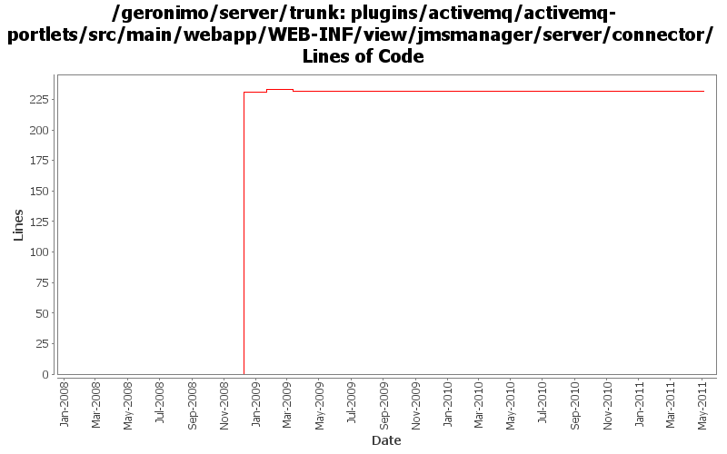

[root]/plugins/activemq/activemq-portlets/src/main/webapp/WEB-INF/view/jmsmanager/server/connector

| Author | Changes | Lines of Code | Lines per Change |
|---|---|---|---|
| Totals | 22 (100.0%) | 279 (100.0%) | 12.6 |
| dwoods | 12 (54.5%) | 274 (98.2%) | 22.8 |
| genspring | 1 (4.5%) | 2 (0.7%) | 2.0 |
| gawor | 1 (4.5%) | 2 (0.7%) | 2.0 |
| jbohn | 1 (4.5%) | 1 (0.4%) | 1.0 |
| xuhaihong | 1 (4.5%) | 0 (0.0%) | 0.0 |
| djencks | 6 (27.3%) | 0 (0.0%) | 0.0 |
GERONIMO-5859 Reenable JMS related portlets, patch from Shenghao Fang
2 lines of code changed in 1 file:
some more i18n work. Patch from Kan Ogawa (GERONIMO-4717)
2 lines of code changed in 1 file:
GERONIMO-4517 Apply unified message display style(G-4484) to javascript alert messages. Together with the localization of these messages. Thanks for the patch, Gang Yin
0 lines of code changed in 1 file:
part 4 of more cleanup of old forms (see Rev738104 for part 3)
1 lines of code changed in 1 file:
GERONIMO-4475 Improve JMS portlet for Borker configuration. Applied 4 patches from Ivan.
10 lines of code changed in 1 file:
GERONIMO-4337 rename AMQ5 modules to old names that apps expect
240 lines of code changed in 3 files:
GERONIMO-4337 rename AMQ5 modules to old names that apps expect
0 lines of code changed in 3 files:
GERONIMO-4337 remove old AMQ4 based modules
9 lines of code changed in 3 files:
GERONIMO-4081 Accessibility issues. Applied GERONIMO-4081-activemq.patch from Ivan.
6 lines of code changed in 1 file:
GERONIMO-4025 Accessibility issues. Applied GERONIMO-4025-activemq-and-monitoring.patch from Rex.
9 lines of code changed in 1 file:
GERONIMO-1775 apply 2nd patch. Console-testsuite passes for me and I didn't see any problems
0 lines of code changed in 6 files: